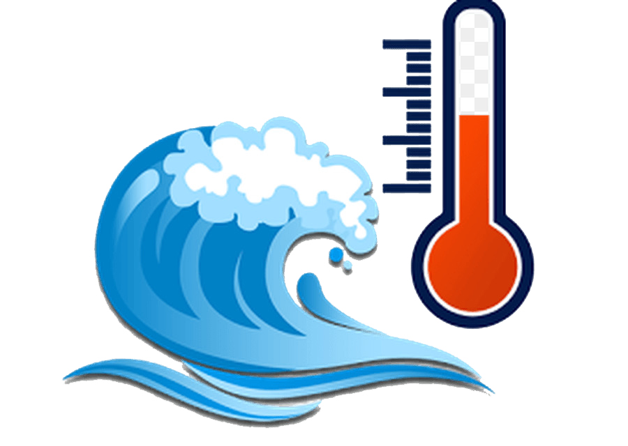

<nav class="navbar navbar-inverse bg-inverse">
</nav>


<div>

<div class="container">
 <div class="box">
    <div class="capa"><h2 >Sensor de Temp. Ambeintal</h2></div>
    <a [routerLink]="['/temperatura']" routerLinkActive="router-link-active" class="close-sesion">Ver Detalles</a>
 </div>

 <div class="box">
    <div class="capa"><h2>Sensor de Humedad Ambeintal</h2></div>
    <a [routerLink]="['/humedad']" routerLinkActive="router-link-active" class="close-sesion">Ver Detalles</a>

 </div>

 <div class="box">
    <div class="capa"><h2>Estatus del Agua</h2></div>
    <a [routerLink]="['/temp-agua']" routerLinkActive="router-link-active" class="close-sesion">Ver Detalles</a>

 </div>

 <div class="box">
    <div class="capa"><h2>Estado del Ventilador</h2></div>
    <a [routerLink]="['/ventilador']" routerLinkActive="router-link-active" class="close-sesion">Ver Detalles</a>

 </div>
</div>

<div class="local">
   <div class="capa1"><h2>&nbsp;&nbsp;&nbsp;&nbsp;&nbsp;&nbsp;&nbsp;&nbsp;&nbsp;
      &nbsp;&nbsp;&nbsp;&nbsp;&nbsp;&nbsp;&nbsp;&nbsp;&nbsp;&nbsp;Estatus general</h2></div>
   <a [routerLink]="['/estatus-general']" routerLinkActive="router-link-active" class="close-sesion">Ver Detalles</a>

</div>

<div class="estamb1">
   <div class="capa11"><h4><a [routerLink]="['/login']" routerLinkActive="router-link-active" class="close-sesion">Regresar al Inicio</a></h4>
   </div>
   
</div>

<p>&nbsp;</p>
<p>&nbsp;</p>
<p>&nbsp;</p>
<p>&nbsp;</p>
<p>&nbsp;</p>
<p>&nbsp;</p>
<p>&nbsp;</p>
<div class="name">
<p>Created by: Junior Ernesto Martinez Castañeda, Junio 2021</p>
</div>

